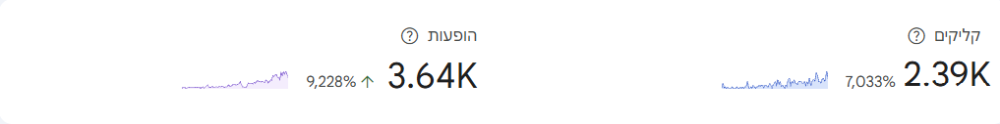

כך נראים הנתונים שלנו ב־Google Search Console — העמודים המובילים הם בכלל לא בעברית.

צילום מסך מתוך Google Search Console
חינם לגמרי · 14 שפות · 130 תרופות · 14 מחשבוני רעילות · מבוסס Plumb's, מהדורה 10